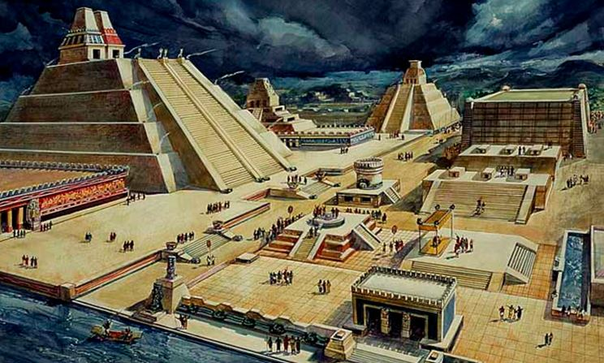
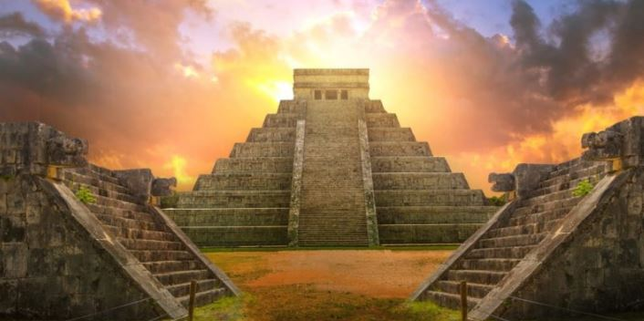
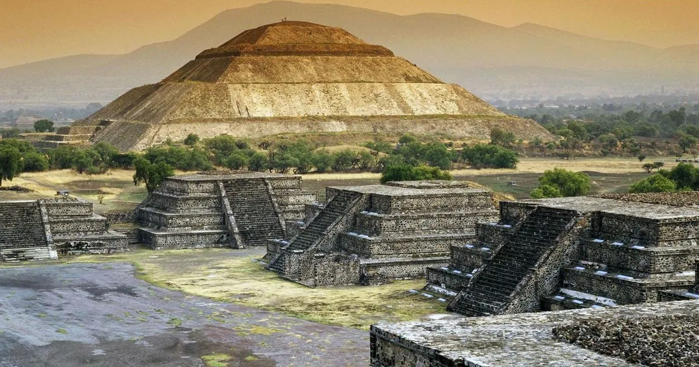
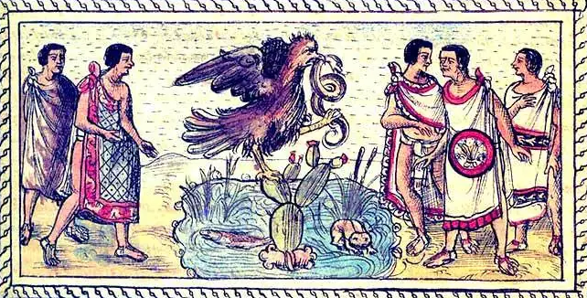

Aproximadamente hace 30,000 años llegaron pequeños grupos de cazadores y recolectores al territorio mexicano. La mayor concentración poblacional se dio en la zona centro sur del país favorecida por las condiciones climáticas y abundancia de agua. A esta zona se le conoce como Mesoamérica, en ella desde el año 2.500 a.C. hasta el 1521 florecieron espléndidas culturas como la Olmeca, Teotihuacana, Maya, Zapoteca, Tolteca, Mixteca y Mexica. Estas culturas tuvieron un fuerte intercambio tanto comercial como cultural lo que explica que compartan características similares como una agricultura basada en el maíz, desarrollo de grandes centros poblacionales, construcciones religiosas tipo basamento-piramidal, exquisitos trabajos en piedra, jade y obsidiana y una religión politeísta teocrática.


Omecatl “habitantes de la región del hule” Periodo Preclásico (2500 a.C – 200 d.C), Llamada “ Cultura Madre” porque sus prácticas científicas, económicas, culturales y religiosas tuvieron gran influencia en otros grupos culturales.
- Ubicación: Región del Golfo (Veracruz y Tabasco)
- Centros ceremoniales: San Lorenzo, La Venta y Tres Zapotes.
- Aportaciones: Sistema numérico, juego de pelota, escritura jeroglífica
- Arquitectura: Primeros basamentos piramidales, diques y canales
- Escultura: Cabezas colosales, Altares y formas zoomorfas

Maay-hu : Huella de agua.
Preclásico s. X a. C hasta el posclásico en siglo XV d. C. Su organización social, política y religiosa influye en las culturas posteriores. Aportaciones: Introdujo grandes avances en matemáticas, escritura, arquitectura y astronomía: Calendario solar 365 días, numeración vigesimal, observación de los astros.
- Ubicación: Yucatán, Campeche y Quintana Roo, parte de Tabasco y Chiapas.
- Centros Ceremoniales: Tikal, Bonampak, Palenque Uxmal y Chichén Itza.
- Arquitectura: Construcciones de bóvedas de arco falso, utilizan zócalos, fachadas, cornisas y crestas.

100 a. C. hasta el 650 d.C Lugar donde fueron hechos los dioses; ciudad de los dioses Fue un poderoso centro político, militar, económico y cultural que influenció a toda Mesoamérica. Abarcó una superficie de más de 20 kilómetros cuadrados con más de 150.000 habitantes.
- Ubicación:Estado de mexico.
- Centros Ceremoniales:Teotihuacan
- Aportaciones: Uso del fresco en la pintura, uso del talud y tablero.
- Arquitectura:Pirámides del Sol, la Luna, Calzada de los muertos, Palacio Quetzalpapalotl.
- Escultura:Austera y geométrica usada en la ornamentación de edificios (serpientes emplumadas, jaguares y figuras marinas).Tláloc, Chalchiutlicue, Quetzalcoatl

De: Metztli, luna; xictli, ombligo y co, lugar Abarca 350 años: de 1150 a 1521 Llamados aztecas por emigrar de Aztlán guiados por Huitzilopochtli en busca de un lugar para asentarse. Al llegar al Valle de México en el lago Texcoco vieron la señal prometida: un águila, en un nopal, devorando una serpiente; y ahí fundaron Tenochtitlán(1325).
- Ubicación:En medio del lago de Texcoco (dominan Mesoamérica excepto a tlaxcaltecas y purépechas.)
- Centros Ceremoniales:Tenochtitlán, Tlatelolco.
- Aportaciones: : Escritura jeroglífica (códices), avances en medicina, anatomía, ingeniería
- Arquitectura:Templo mayor, Templo de Tláloc y Huitzilopochtli, Tzompantli, Palacio de Moctezuma
- Escultura:Destaca la Piedra del Sol, la de Tizoc, Coatlicue, Coyolxauqui.